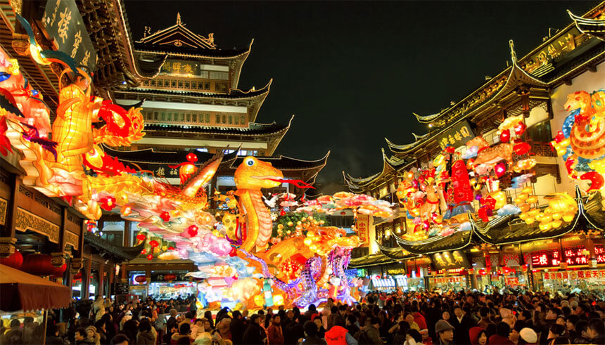
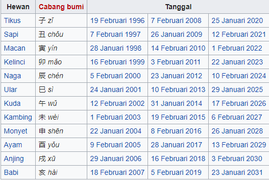

Chinese New Year Festival
Chinese New Year sering disebut juga Spring Festival di dataran China. Chinese New Year biasa diadakan diantara tanggal 21 Januari dan 20 Februari.
Tahun Baru Imlek merupakan perayaan terpenting orang Tionghoa. Perayaan tahun baru imlek dimulai pada hari pertama bulan pertama di penanggalan Tionghoa dan berakhir dengan Cap Go Meh pada tanggal ke-15 (pada saat bulan purnama). Malam tahun baru imlek dikenal sebagai Chúxī yang berarti "malam pergantian tahun".
Terdapat sebuah kalender khusus untuk menentukan tahun baru China. Kalender ini merupakan kalender suryacandra tionghoa.
Kalender tersebut berisi kedua belas shio yang dipengaruhi budaya Han.
Tanggal tahun baru Imlek dapat dilihat dari kalender di bawah ini untuk tahun 1996 sampai 2031.
